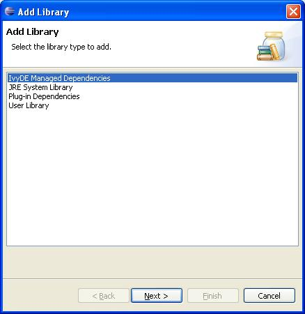
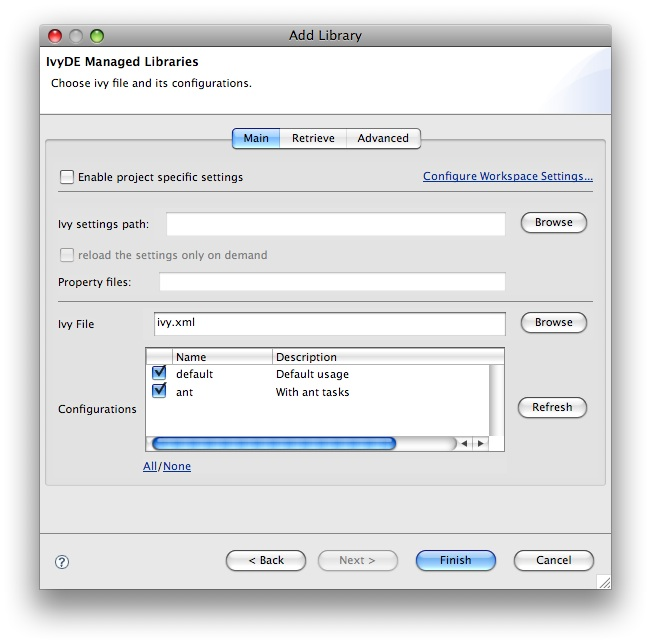
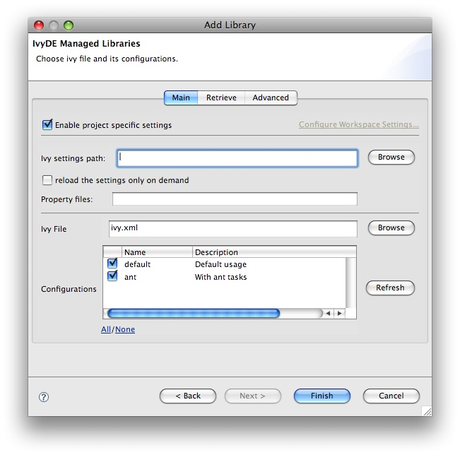
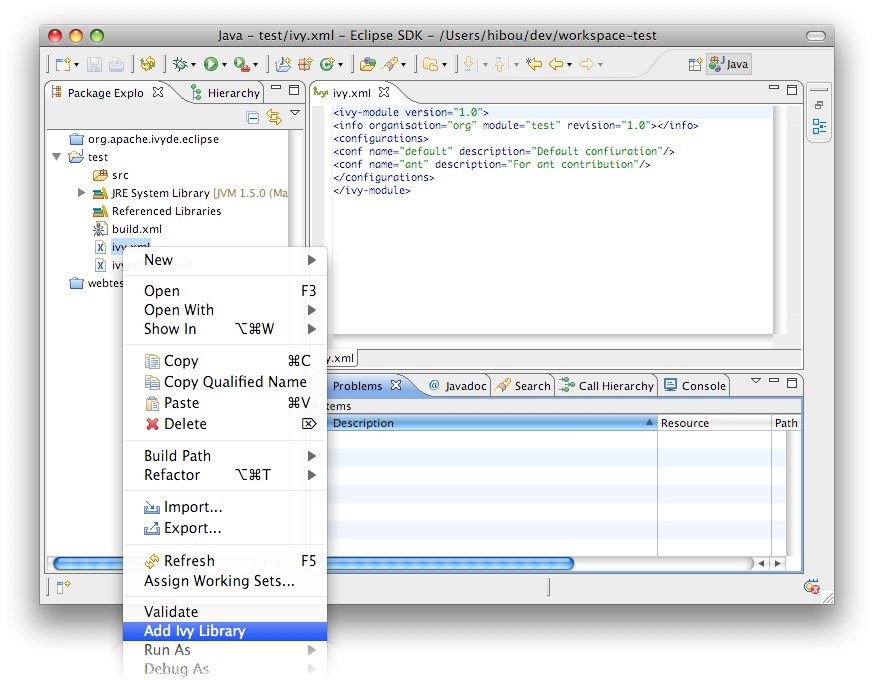

First you should have somewhere an ivy.xml file or a maven pom.xml ready to be used to build a classpath, along if needed with an ivysettings.xml. <h1>Standard creation</h1> The standard way to add the IvyDE classpath container is to manipulate the Eclipse's "Build Path": <ul> <li>Select the project in which you want to create a IvyDE classpath container and open the "Add Libraries" form of Eclipse (In package Explorer, in popup menu of your project choose : [Build Path]/[Add Libraries]).<br/><br/><center><img src="../images/build_path_menu.jpg"/></center><br/><br/></li> <li>Select "IvyDE Managed Dependencies" item.<br/><br/><center></center><br/><br/></li> <li>Select an ivy.xml file or a <a href="maven.html">maven pom.xml</a> and the desired configurations.<br/><br/><center></center><br/><br/></li> </ul> <li><a name="localconf"></a>You then might want to use specific settings for your project, a configuration different from the <a href="../preferences.html">global one</a>. For the ivy settings, click on the "Enable project specific settings" check box. See also the documentation about <a href="../eclipsevar.html">Eclipse variables</a>. <center></center></li> Your class path is set and you can see all dependencies in one unique folder of the package explorer (folder name = ivy-file-name[conf1,conf2]). <center><img src="../images/cp_node.jpg"></center> <h1>Fast creation</h1> For most of the projects, the ivy.xml file (or the pom.xml) is in the java project. So you can just right click on the ivy.xml and select "Add Ivy Library..." and you will direclty access the prefilled setup of the IvyDE classpath container <center></center>